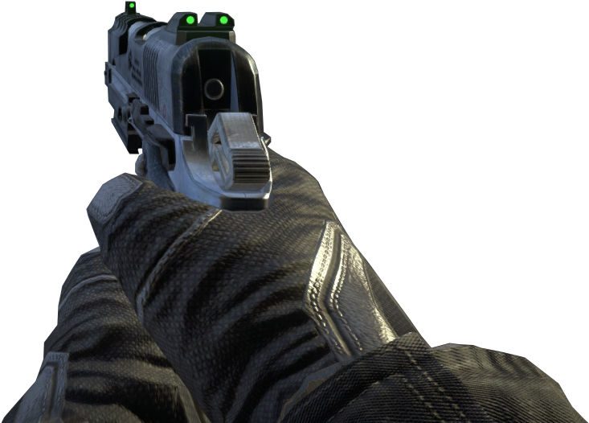

Perceberam que você entrou armado na empresa. Agora todos da produção estão atrás de você, MATE-OS!☠️
Mire com o MOUSE. Clique com o botão ESQUERDO para atirar.
Clique com o DIREITO para recarregar.
Created by Kleberson Pastori
